One record per person, not six systems
Every safety-critical person has one record holding their status, competence, passes, training, experience and documentation. When you need to answer whether someone is safe to work, the answer is in one place.
The employee directory
The directory lists your safety-critical personnel with role, depot, status and company, and opens straight into the record. Access is permission-controlled, and drivers with own-record-only access see their own record instead of the directory.
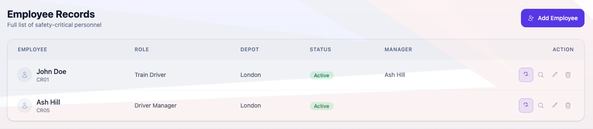
Cab passes
Cab pass authority and validity are held on the record, with issue and colour tracked so the pass in someone's pocket matches the pass in the system.
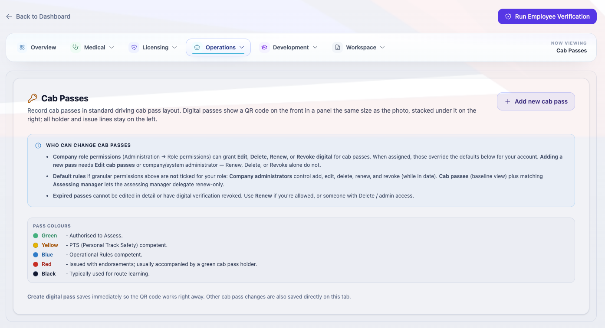
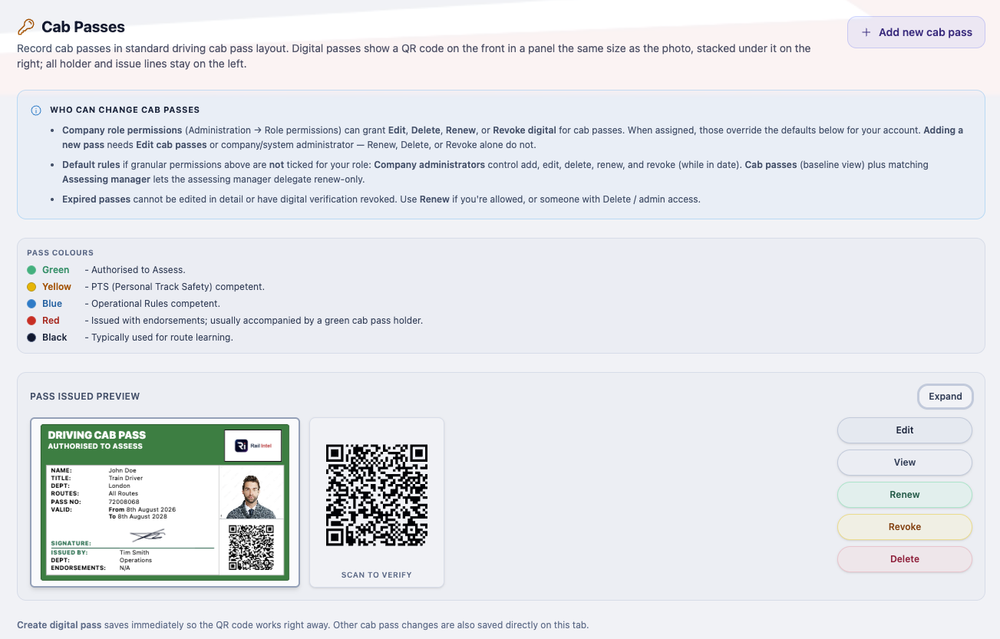
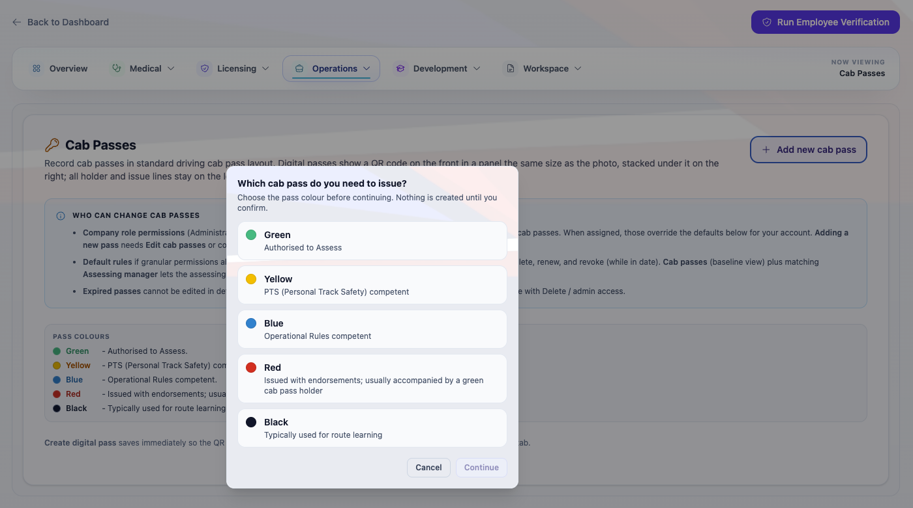
Training, qualifications and experience
Training records and qualifications are held with their provider and expiry, so a lapsing qualification is visible before it becomes a problem. Experience Records track driving experience and trainee hours, including daylight and darkness progress against your company standards.
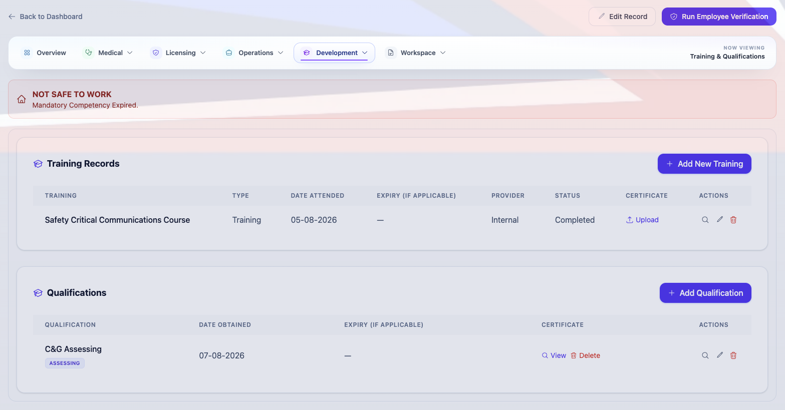
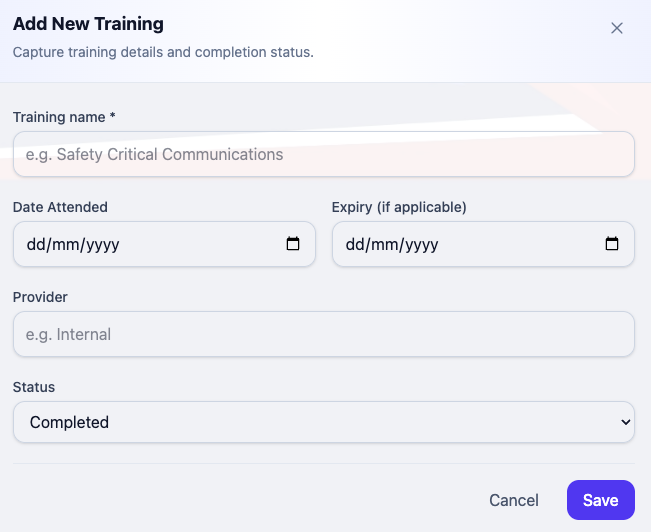
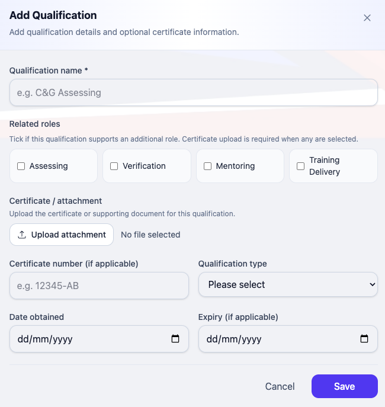
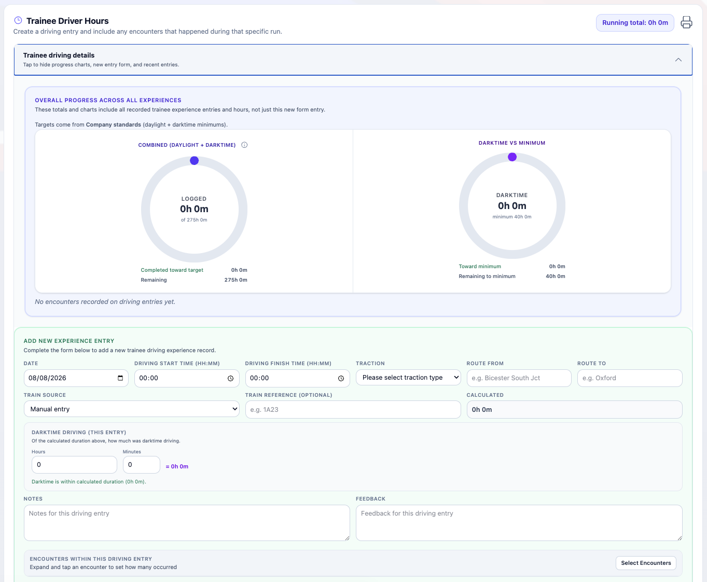
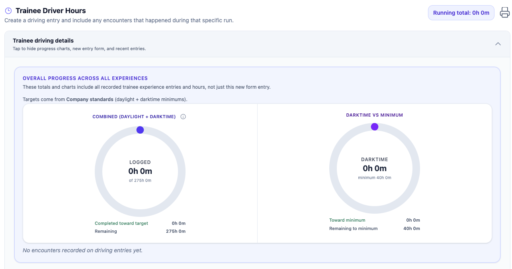
Documents and messaging
Supporting evidence is uploaded against the record and counts against your company storage quota. Messaging and notes keep the conversation about a record attached to it, with email notification when a new message is raised.
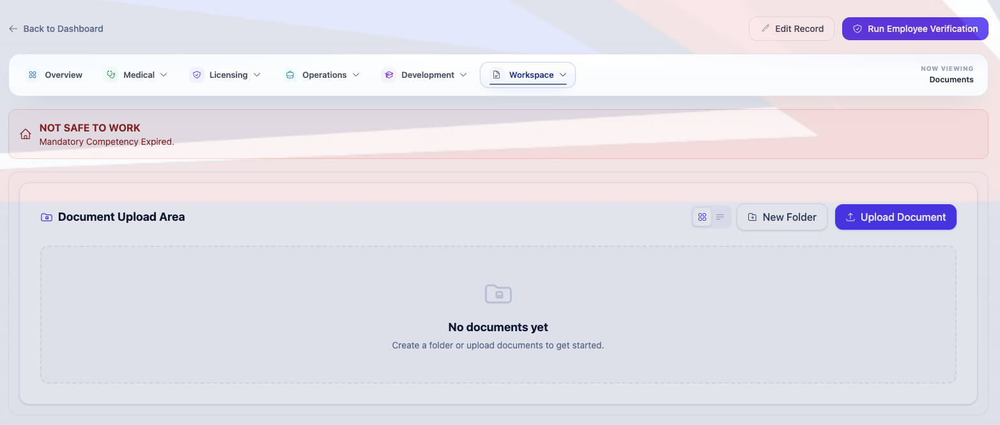
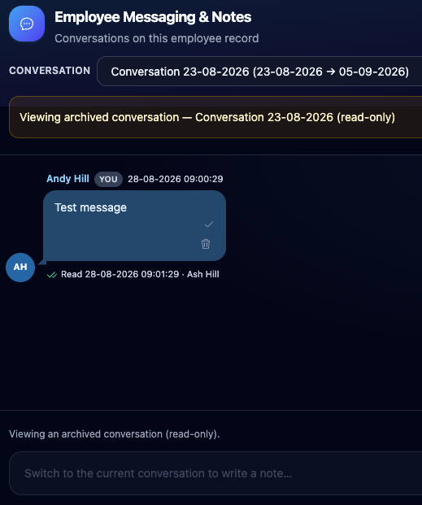
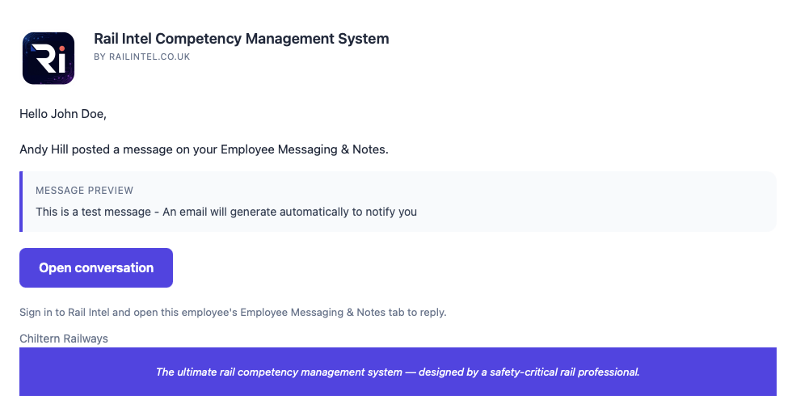
Everything here is included
These capabilities are part of core Rail Intel, gated only by the permissions you assign. Optional modules extend them further.